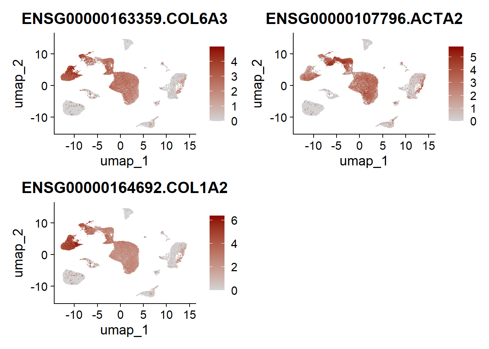

CUP Umaps
A.DeMartin
2025-03-17
Last updated: 2025-05-02
Checks: 5 2
Knit directory: CUP/
This reproducible R Markdown analysis was created with workflowr (version 1.7.1). The Checks tab describes the reproducibility checks that were applied when the results were created. The Past versions tab lists the development history.
The R Markdown is untracked by Git. To know which version of the R
Markdown file created these results, you’ll want to first commit it to
the Git repo. If you’re still working on the analysis, you can ignore
this warning. When you’re finished, you can run
wflow_publish to commit the R Markdown file and build the
HTML.
Great job! The global environment was empty. Objects defined in the global environment can affect the analysis in your R Markdown file in unknown ways. For reproduciblity it’s best to always run the code in an empty environment.
The command set.seed(20250318) was run prior to running
the code in the R Markdown file. Setting a seed ensures that any results
that rely on randomness, e.g. subsampling or permutations, are
reproducible.
Great job! Recording the operating system, R version, and package versions is critical for reproducibility.
Nice! There were no cached chunks for this analysis, so you can be confident that you successfully produced the results during this run.
Using absolute paths to the files within your workflowr project makes it difficult for you and others to run your code on a different machine. Change the absolute path(s) below to the suggested relative path(s) to make your code more reproducible.
| absolute | relative |
|---|---|
| /R/CUP/data/CD45neg_allmerged_seurat.rds | data/CD45neg_allmerged_seurat.rds |
| /R/CUP/analysis/markerGenes | analysis/markerGenes |
Great! You are using Git for version control. Tracking code development and connecting the code version to the results is critical for reproducibility.
The results in this page were generated with repository version e1bdb0b. See the Past versions tab to see a history of the changes made to the R Markdown and HTML files.
Note that you need to be careful to ensure that all relevant files for
the analysis have been committed to Git prior to generating the results
(you can use wflow_publish or
wflow_git_commit). workflowr only checks the R Markdown
file, but you know if there are other scripts or data files that it
depends on. Below is the status of the Git repository when the results
were generated:
Ignored files:
Ignored: .DS_Store
Ignored: .Rhistory
Ignored: .Rproj.user/
Ignored: analysis/.Rhistory
Ignored: data/CD45pos/
Ignored: data/seurat_objects/
Untracked files:
Untracked: analysis/CUP_knitting_easy_read.Rmd
Untracked: analysis/markerGenes_CD45pos
Note that any generated files, e.g. HTML, png, CSS, etc., are not included in this status report because it is ok for generated content to have uncommitted changes.
There are no past versions. Publish this analysis with
wflow_publish() to start tracking its development.
load packages
load file
##load merged file
fileNam <- "/R/CUP/data/CD45neg_allmerged_seurat.rds"
seuratM <- readRDS(fileNam)
table(seuratM$dataset)
1_20200909_Human__LN_FSC1_v3 1_20210113_Human_LN_FSC1_v3
2588 1558
13_20200723_Hu_LN_Lin_neg_FSC_v3 2_20200909_Human__LN_FSC2_v3
3133 2606
2_20210113_Human_LN_FSC2_v3 373291_01-1_20241211_Hu_CUP_01_CD45neg
1019 2264
373291_03-3_20241211_Hu_CUP_04_CD45neg 373291_05-5_20241211_Hu_CUP_05_CD45neg
5540 4708
373291_07-7_20241211_Hu_CUP_03_CD45neg 380131_01-1_20250224_Hu_CUP_01_stroma
1718 3758
o27533_1_01-1_20220201_Hu_LN_stroma_v3 o27533_1_05-5_20220202_Hu_LN_stroma_v3
9001 7613 table(seuratM$RNA_snn_res.0.25)
0 1 2 3 4 5 6 7 8 9 10 11 12 13 14 15 16 17 18 19
8491 4373 3754 3148 3140 3121 2506 2431 2029 1946 1890 1855 1505 1113 1036 1036 896 592 543 101 table(seuratM$orig.ident)
45506 ### add any type of metadata
### patient
CUP_01 <- c("373291_01-1_20241211_Hu_CUP_01_CD45neg", "380131_01-1_20250224_Hu_CUP_01_stroma")
CUP_03 <- c("373291_07-7_20241211_Hu_CUP_03_CD45neg")
CUP_04 <- c("373291_03-3_20241211_Hu_CUP_04_CD45neg")
CUP_05 <- c("373291_05-5_20241211_Hu_CUP_05_CD45neg")
hLN_01 <- c("13_20200723_Hu_LN_Lin_neg_FSC_v3")
hLN_02 <- c("1_20200909_Human__LN_FSC1_v3","2_20200909_Human__LN_FSC2_v3")
hLN_03 <- c("1_20210113_Human_LN_FSC1_v3","2_20210113_Human_LN_FSC2_v3")
hLN_04 <- c("o27533_1_01-1_20220201_Hu_LN_stroma_v3")
hLN_05 <- c("o27533_1_05-5_20220202_Hu_LN_stroma_v3")
seuratM$patient <- "pat_nr"
seuratM$patient[which(seuratM$dataset %in% CUP_01)] <- "CUP_01"
seuratM$patient[which(seuratM$dataset %in% CUP_03)] <- "CUP_03"
seuratM$patient[which(seuratM$dataset %in% CUP_04)] <- "CUP_04"
seuratM$patient[which(seuratM$dataset %in% CUP_05)] <- "CUP_05"
seuratM$patient[which(seuratM$dataset %in% hLN_01)] <- "hLN_01"
seuratM$patient[which(seuratM$dataset %in% hLN_02)] <- "hLN-02"
seuratM$patient[which(seuratM$dataset %in% hLN_03)] <- "hLN_03"
seuratM$patient[which(seuratM$dataset %in% hLN_04)] <- "hLN_04"
seuratM$patient[which(seuratM$dataset %in% hLN_05)] <- "hLN_05"
table(seuratM$patient)
CUP_01 CUP_03 CUP_04 CUP_05 hLN-02 hLN_01 hLN_03 hLN_04 hLN_05
6022 1718 5540 4708 5194 3133 2577 9001 7613 ###order patients
ordpatients <- c("hLN_01","hLN-02", "hLN_03","hLN_04", "hLN_05","CUP_01", "CUP_03", "CUP_04","CUP_05")
seuratM$patient <- factor(seuratM$patient, levels=c("hLN_01","hLN-02", "hLN_03","hLN_04", "hLN_05","CUP_01", "CUP_03", "CUP_04","CUP_05"))
Idents(seuratM) <- seuratM$patient
table(seuratM$patient)
hLN_01 hLN-02 hLN_03 hLN_04 hLN_05 CUP_01 CUP_03 CUP_04 CUP_05
3133 5194 2577 9001 7613 6022 1718 5540 4708 #### diseaseCond
seuratM$diseaseCond <- "diseaseCond"
seuratM$diseaseCond[grepl("CUP", seuratM$dataset)] <- "CUP"
seuratM$diseaseCond[grepl("LN", seuratM$dataset)] <- "healthy"
table(seuratM$diseaseCond)
CUP healthy
17988 27518 ###order
orddiseaseCond <- c("healthy", "CUP")
seuratM$diseaseCond <- factor(seuratM$diseaseCond, levels=c("healthy", "CUP"))
Idents(seuratM) <- seuratM$diseaseCond
table(seuratM$diseaseCond)
healthy CUP
27518 17988 ## Remove outlier and filter out CD45+ clusters
seuratMfil <- subset(seuratM, patient == c("hLN_01"), invert = TRUE)
seuratMfil <- subset(seuratMfil, RNA_snn_res.0.25 %in% c("7","9","11","19"),invert = TRUE)
table(seuratMfil$patient)
hLN_01 hLN-02 hLN_03 hLN_04 hLN_05 CUP_01 CUP_03 CUP_04 CUP_05
0 5127 2418 8582 7490 5790 1296 5219 118 Idents(seuratMfil) <- seuratMfil$RNA_snn_res.0.25
DimPlot(seuratMfil, reduction = "umap", pt.size = 0.1) 
##rerun seurat
seuratMfil <- NormalizeData (object = seuratMfil)
seuratMfil <- FindVariableFeatures(object = seuratMfil)
seuratMfil <- ScaleData(object = seuratMfil, verbose = TRUE)
seuratMfil <- RunPCA(object=seuratMfil, npcs = 30, verbose = FALSE)
seuratMfil <- RunTSNE(object=seuratMfil, reduction="pca", dims = 1:20)
seuratMfil <- RunUMAP(object=seuratMfil, reduction="pca", dims = 1:20)
seuratMfil <- FindNeighbors(object = seuratMfil, reduction = "pca", dims= 1:20)
res <- c(0.25, 0.6, 0.8, 0.4)
for (i in 1:length(res)) {
seuratMfil <- FindClusters(object = seuratMfil, resolution = res[i], random.seed = 1234)
}Modularity Optimizer version 1.3.0 by Ludo Waltman and Nees Jan van Eck
Number of nodes: 36040
Number of edges: 1257814
Running Louvain algorithm...
Maximum modularity in 10 random starts: 0.9623
Number of communities: 13
Elapsed time: 5 seconds
Modularity Optimizer version 1.3.0 by Ludo Waltman and Nees Jan van Eck
Number of nodes: 36040
Number of edges: 1257814
Running Louvain algorithm...
Maximum modularity in 10 random starts: 0.9334
Number of communities: 23
Elapsed time: 5 seconds
Modularity Optimizer version 1.3.0 by Ludo Waltman and Nees Jan van Eck
Number of nodes: 36040
Number of edges: 1257814
Running Louvain algorithm...
Maximum modularity in 10 random starts: 0.9198
Number of communities: 28
Elapsed time: 4 seconds
Modularity Optimizer version 1.3.0 by Ludo Waltman and Nees Jan van Eck
Number of nodes: 36040
Number of edges: 1257814
Running Louvain algorithm...
Maximum modularity in 10 random starts: 0.9495
Number of communities: 20
Elapsed time: 5 secondsCUP non-hematopoietic cells
Resolution 0.25
Idents(seuratMfil) <- seuratMfil$RNA_snn_res.0.25
DimPlot(seuratMfil, reduction = "umap", pt.size = 0.1) 
patient
Idents(seuratMfil) <- seuratMfil$patient
DimPlot(seuratMfil, reduction = "umap", pt.size = 0.1, shuffle = TRUE) 
diseaseCond
Idents(seuratMfil) <- seuratMfil$diseaseCond
coldiseaseCond <- c("#202547","lightgrey")
names(coldiseaseCond) <- c("healthy", "CUP")
DimPlot(seuratMfil, reduction = "umap", pt.size = 0.1, cols = coldiseaseCond, order = "healthy") 
plot features cluster marker
genelist <- c("ENSG00000261371.PECAM1","ENSG00000117707.PROX1","ENSG00000163359.COL6A3","ENSG00000107796.ACTA2","ENSG00000164692.COL1A2","ENSG00000205420.KRT6A","ENSG00000119888.EPCAM","ENSG00000171345.KRT19","ENSG00000147889.CDKN2A")Marker genes from distinct cell types
Endothelial cells
FeaturePlot(seuratMfil, reduction = "umap",
features = genelist[1:2],
cols=c("lightgrey", "darkred"),
order = T )+
theme(legend.position="right", legend.title=element_text(size=3)) 
fibroblasts
FeaturePlot(seuratMfil, reduction = "umap",
features = genelist[3:5],
cols=c("lightgrey", "darkred"),
order = T )+
theme(legend.position="right", legend.title=element_text(size=3)) 
Tumor cells
FeaturePlot(seuratMfil, reduction = "umap",
features = genelist[6:9],
cols=c("lightgrey", "darkred"),
order = T )+
theme(legend.position="right", legend.title=element_text(size=3)) 
##Endo
FeaturePlot(seuratMfil, features = "ENSG00000261371.PECAM1", pt.size = 0.5, cols = c("lightgrey", "#BE3144"))
FeaturePlot(seuratMfil, features = "ENSG00000117707.PROX1", pt.size = 0.5, cols = c("lightgrey", "#BE3144"))
##Fibroblastic
FeaturePlot(seuratMfil, features = "ENSG00000163359.COL6A3", pt.size = 0.5, cols = c("lightgrey", "#BE3144"))
FeaturePlot(seuratMfil, features = "ENSG00000107796.ACTA2", pt.size = 0.5, cols = c("lightgrey", "#BE3144"))
FeaturePlot(seuratMfil, features = "ENSG00000164692.COL1A2", pt.size = 0.5, cols = c("lightgrey", "#BE3144"))
##Tumor
FeaturePlot(seuratMfil, features = "ENSG00000205420.KRT6A", pt.size = 0.5, cols = c("lightgrey", "#BE3144"))
FeaturePlot(seuratMfil, features = "ENSG00000119888.EPCAM", pt.size = 0.5, cols = c("lightgrey", "#BE3144"))
FeaturePlot(seuratMfil, features = "ENSG00000171345.KRT19", pt.size = 0.5, cols = c("lightgrey", "#BE3144"))
FeaturePlot(seuratMfil, features = "ENSG00000147889.CDKN2A", pt.size = 0.5, cols = c("lightgrey", "#BE3144"))Assign cell types to clusters
colclusterName <- c("#67001f", "#D53E4F", "#f4a582", "#FEE08B", "#003c30","#01665e","#66C2A5", "#3288BD","#BEAED4", "#c7eae5","#355C7D","#202547","#B45B5C")
names(colclusterName) <- c("FRC1","FRC2","Tu1","BEC1","CAF","BEC2", "PRC","PRC_Tu","BEC3","Tu2","Tu3","LEC","PI16_FRC")
##assign celltypes
seuratMfil$colclusterName <- "celltype"
seuratMfil$colclusterName[which(seuratMfil$RNA_snn_res.0.25 == "0")] <- "FRC1"
seuratMfil$colclusterName[which(seuratMfil$RNA_snn_res.0.25 == "1")] <- "FRC2"
seuratMfil$colclusterName[which(seuratMfil$RNA_snn_res.0.25 == "2")] <- "Tu1"
seuratMfil$colclusterName[which(seuratMfil$RNA_snn_res.0.25 == "3")] <- "BEC1"
seuratMfil$colclusterName[which(seuratMfil$RNA_snn_res.0.25 == "4")] <- "CAF"
seuratMfil$colclusterName[which(seuratMfil$RNA_snn_res.0.25 == "5")] <- "BEC2"
seuratMfil$colclusterName[which(seuratMfil$RNA_snn_res.0.25 == "6")] <- "PRC"
seuratMfil$colclusterName[which(seuratMfil$RNA_snn_res.0.25 == "7")] <- "PRC_Tu"
seuratMfil$colclusterName[which(seuratMfil$RNA_snn_res.0.25 == "8")] <- "BEC3"
seuratMfil$colclusterName[which(seuratMfil$RNA_snn_res.0.25 == "9")] <- "Tu2"
seuratMfil$colclusterName[which(seuratMfil$RNA_snn_res.0.25 == "10")] <- "Tu3"
seuratMfil$colclusterName[which(seuratMfil$RNA_snn_res.0.25 == "11")] <- "LEC"
seuratMfil$colclusterName[which(seuratMfil$RNA_snn_res.0.25 == "12")] <- "PI16_FRC"
table(seuratMfil$colclusterName)
BEC1 BEC2 BEC3 CAF FRC1 FRC2 LEC PI16_FRC PRC PRC_Tu Tu1
3606 2568 1885 3155 7823 4497 892 504 2565 2020 4377
Tu2 Tu3
1112 1036 UMAP with defined cluster name
UMAP with clusterName
Idents(seuratMfil) <- seuratMfil$colclusterName
DimPlot(seuratMfil, reduction = "umap", pt.size = 0.1, cols = colclusterName, label =TRUE) 
UMAP with clusterName split by disease
Idents(seuratMfil) <- seuratMfil$colclusterName
DimPlot(seuratMfil, reduction = "umap", pt.size = 0.1, cols = colclusterName, label =FALSE, split.by = "diseaseCond") 
UMAP with clusterName split by patients
Idents(seuratMfil) <- seuratMfil$colclusterName
DimPlot(seuratMfil, reduction = "umap", pt.size = 0.1, cols = colclusterName, label =FALSE, split.by = "patient") 
calculate cluster marker genes
##cluster marker
Idents(seuratMfil) <- seuratMfil$colclusterName
markerGenes <- FindAllMarkers(seuratMfil, only.pos=T) %>%
dplyr::filter(p_val_adj < 0.01)
#save table
write.table(markerGenes,
file= "/R/CUP/analysis/markerGenes",
sep="\t",
quote=F,
row.names=F,
col.names=T)Plot gene signatures onto UMAP
##convert seurat object to sce object
sce <- as.SingleCellExperiment(seuratMfil)
signatures <- list(
CAF = c("PDPN", "POSTN", "FAP", "LRRC15"),
FRC = c("C7", "CCL21","CCL19", "CXCL12","IL33", "PI16"),
PRC = c("ACTA2", "ITGA7","RGS5", "NOTCH3", "MCAM"),
Tumor = c("KRT6A","EPCAM","KRT1","CDKN2A"),
Endothelial =c("PECAM1", "VWF")
)
# Extract gene symbols
genes <- data.frame(geneID = rownames(sce)) %>%
mutate(gene = gsub(".*\\.", "", geneID))
# Function to compute signature and return UMAP plot
plot_signature_umap <- function(sig_name, sig_genes) {
signGenes <- genes %>% filter(gene %in% sig_genes)
sceSub <- sce[rownames(sce) %in% signGenes$geneID, ]
cntMat <- rowSums(t(as.matrix(sceSub@assays@data$logcounts))) / nrow(signGenes)
sceSub$sign <- cntMat
sceSub$sign2 <- pmin(sceSub$sign, 2.5) # cap at 2.5
plotUMAP(sceSub, colour_by = "sign2", point_size = 1) +
scale_color_viridis_c() + # or another color scale
ggtitle(paste0(sig_name, " signature")) +
theme_minimal() +
theme(legend.position = "right")
}
# Generate all plots
umap_plots <- lapply(names(signatures), function(name) {
plot_signature_umap(name, signatures[[name]])
})Gene signatures of cell types
CAF gene signatures
print(umap_plots[[1]])
FRC gene signatures
print(umap_plots[[2]])
PRC gene signatures
print(umap_plots[[3]])
Tumor gene signatures
print(umap_plots[[4]])
Endothelial gene signatures
print(umap_plots[[5]])
dotplot marker genes
seuratMfil$colclusterName <- factor(seuratMfil$colclusterName, levels=c("PI16_FRC","FRC1","FRC2", "PRC","PRC_Tu","CAF","Tu1","Tu2","Tu3","BEC1","BEC2","BEC3","LEC"))
Idents(seuratMfil) <-seuratMfil$colclusterName
genes <- data.frame(gene=rownames(seuratMfil)) %>%
mutate(geneID=gsub("^.*\\.", "", gene))
selGenes <- data.frame(geneID=rev(c( "COL1A2", "COL6A3", "PDGFRB", "DCN", "FBN1", "C7", "CCL21","CCL19", "CXCL12","IL33", "PI16", "ACTA2", "ITGA7","RGS5", "NOTCH3", "MCAM","PDPN", "FAP","LRRC15","POSTN","PECAM1", "VWF", "PROX1"))) %>% left_join(., genes, by="geneID") %>% filter(gene != "ENSG00000232995.RGS5")
DotPlot(seuratMfil, features = selGenes$gene, group.by = "colclusterName") +
RotatedAxis() +
scale_color_viridis(option = "F") +
coord_flip()
relative abundance of cell types
###dataset
datList <- NULL
for(con in unique(seuratMfil$patient)){
seuratSub <- subset(seuratMfil, patient==con)
print(dim(seuratSub))
dat_con <- as.data.frame(table(seuratSub$colclusterName)) %>%
mutate(percent=Freq/ncol(seuratSub)) %>% mutate(patient=con)
datList[[con]] <- dat_con
}[1] 41620 5127
[1] 41620 2418
[1] 41620 5790
[1] 41620 5219
[1] 41620 118
[1] 41620 1296
[1] 41620 8582
[1] 41620 7490dat_all <- do.call("rbind", datList)
# Define the order you want
patient_order <- c("hLN_01", "hLN-02", "hLN_03", "hLN_04", "hLN_05", "CUP_01", "CUP_03", "CUP_04", "CUP_05") # customize as needed
dat_all$patient <- factor(dat_all$patient, levels = patient_order)
## plot abundance - separated by patients
ggbarplot(dat_all, x= "patient", y= "percent", fill = "Var1", legend = "right", legend.titel = "cluster", ylab = "frequency") + theme(axis.text.x = element_text(angle = 90, vjust = 0.5, hjust=1))
###cond
###patient_diseaseCond
datList <- NULL
for(con in unique(seuratMfil$diseaseCond)){
seuratSub <- subset(seuratMfil, diseaseCond==con)
print(dim(seuratSub))
dat_con <- as.data.frame(table(seuratSub$colclusterName)) %>%
mutate(percent=Freq/ncol(seuratSub)) %>% mutate(diseaseCond=con)
datList[[con]] <- dat_con
}[1] 41620 23617
[1] 41620 12423dat_all <- do.call("rbind", datList)
## plot abundance - separated by condition
ggbarplot(dat_all, x= "diseaseCond", y= "percent", fill = "Var1", palette = colclusterName, legend = "right", legend.titel = "cluster", ylab = "frequency") + theme(axis.text.x = element_text(angle = 90, vjust = 0.5, hjust=1)) 
Filter the object with fibroblasts only
## Filter particular cell populations
seuratM_fib_only <- subset(seuratMfil, colclusterName %in% c("FRC1","FRC2","PRC","PI16_FRC","CAF","PRC_Tu"))
colname_Fib <- c("#67001f", "#D53E4F", "#003c30", "#3288BD","#BEAED4", "#c7eae5")
names(colname_Fib) <- c("FRC1","FRC2","CAF","PRC","PRC_Tu","PI16_FRC")
##rerun seurat
seuratM_fib_only <- NormalizeData (object = seuratM_fib_only)
seuratM_fib_only <- FindVariableFeatures(object = seuratM_fib_only)
seuratM_fib_only <- ScaleData(object = seuratM_fib_only, verbose = TRUE)
seuratM_fib_only <- RunPCA(object=seuratM_fib_only, npcs = 30, verbose = FALSE)
seuratM_fib_only <- RunTSNE(object=seuratM_fib_only, reduction="pca", dims = 1:20)
seuratM_fib_only <- RunUMAP(object=seuratM_fib_only, reduction="pca", dims = 1:20)
seuratM_fib_only <- FindNeighbors(object = seuratM_fib_only, reduction = "pca", dims= 1:20)
res <- c(0.25, 0.6, 0.8, 0.4)
for (i in 1:length(res)) {
seuratM_fib_only <- FindClusters(object = seuratM_fib_only, resolution = res[i], random.seed = 1234)
}Modularity Optimizer version 1.3.0 by Ludo Waltman and Nees Jan van Eck
Number of nodes: 20564
Number of edges: 702640
Running Louvain algorithm...
Maximum modularity in 10 random starts: 0.9422
Number of communities: 11
Elapsed time: 2 seconds
Modularity Optimizer version 1.3.0 by Ludo Waltman and Nees Jan van Eck
Number of nodes: 20564
Number of edges: 702640
Running Louvain algorithm...
Maximum modularity in 10 random starts: 0.9086
Number of communities: 17
Elapsed time: 2 seconds
Modularity Optimizer version 1.3.0 by Ludo Waltman and Nees Jan van Eck
Number of nodes: 20564
Number of edges: 702640
Running Louvain algorithm...
Maximum modularity in 10 random starts: 0.8936
Number of communities: 20
Elapsed time: 1 seconds
Modularity Optimizer version 1.3.0 by Ludo Waltman and Nees Jan van Eck
Number of nodes: 20564
Number of edges: 702640
Running Louvain algorithm...
Maximum modularity in 10 random starts: 0.9265
Number of communities: 15
Elapsed time: 2 secondsIdents(seuratM_fib_only) <- seuratM_fib_only$colclusterName
DimPlot(seuratM_fib_only, reduction = "umap", pt.size = 0.1) 
Idents(seuratM_fib_only) <- seuratM_fib_only$patient
DimPlot(seuratM_fib_only, reduction = "umap", pt.size = 0.1, shuffle = TRUE) 
Idents(seuratM_fib_only) <- seuratM_fib_only$diseaseCond
coldiseaseCond <- c("#202547","lightgrey")
names(coldiseaseCond) <- c( "CUP", "healthy")
DimPlot(seuratM_fib_only, reduction = "umap", pt.size = 0.1, cols = coldiseaseCond, order = "CUP") 
relative abundance of cell types
rel abundance_fibroblasts spilt by patients
datList <- NULL
for(con in unique(seuratM_fib_only$patient)){
seuratSub <- subset(seuratM_fib_only, patient==con)
print(dim(seuratSub))
dat_con <- as.data.frame(table(seuratSub$colclusterName)) %>%
mutate(percent=Freq/ncol(seuratSub)) %>% mutate(patient=con)
datList[[con]] <- dat_con
}[1] 41620 5121
[1] 41620 2292
[1] 41620 1179
[1] 41620 3844
[1] 41620 54
[1] 41620 121
[1] 41620 4549
[1] 41620 3404dat_all <- do.call("rbind", datList)
# Define the order you want
patient_order <- c("hLN_01", "hLN-02", "hLN_03", "hLN_04", "hLN_05", "CUP_01", "CUP_03", "CUP_04", "CUP_05") # customize as needed
dat_all$patient <- factor(dat_all$patient, levels = patient_order)
# plot abundance - separated by patients
ggbarplot(dat_all, x= "patient", y= "percent", fill = "Var1", palette = colname_Fib, legend = "right", legend.titel = "cluster", ylab = "frequency") + theme(axis.text.x = element_text(angle = 90, vjust = 0.5, hjust=1))
rel abundance_fibroblasts spilt by condition
datList <- NULL
for(con in unique(seuratM_fib_only$diseaseCond)){
seuratSub <- subset(seuratM_fib_only, diseaseCond==con)
print(dim(seuratSub))
dat_con <- as.data.frame(table(seuratSub$colclusterName)) %>%
mutate(percent=Freq/ncol(seuratSub)) %>% mutate(diseaseCond=con)
datList[[con]] <- dat_con
}[1] 41620 15366
[1] 41620 5198dat_all <- do.call("rbind", datList)
# plot abundance - separated by condition
ggbarplot(dat_all, x= "diseaseCond", y= "percent", fill = "Var1", palette = colname_Fib, legend = "right", legend.titel = "cluster", ylab = "frequency") + theme(axis.text.x = element_text(angle = 90, vjust = 0.5, hjust=1)) 
session info
date()[1] "Fri May 2 12:58:06 2025"sessionInfo()R version 4.4.1 (2024-06-14 ucrt)
Platform: x86_64-w64-mingw32/x64
Running under: Windows 11 x64 (build 22631)
Matrix products: default
locale:
[1] LC_COLLATE=English_United States.utf8 LC_CTYPE=English_United States.utf8
[3] LC_MONETARY=English_United States.utf8 LC_NUMERIC=C
[5] LC_TIME=English_United States.utf8
time zone: Europe/Berlin
tzcode source: internal
attached base packages:
[1] grid stats4 stats graphics grDevices utils datasets methods base
other attached packages:
[1] NCmisc_1.2.0 VennDiagram_1.7.3 futile.logger_1.4.3
[4] ggupset_0.4.0 gridExtra_2.3 DOSE_3.30.5
[7] enrichplot_1.24.4 msigdbr_7.5.1 org.Hs.eg.db_3.19.1
[10] AnnotationDbi_1.66.0 clusterProfiler_4.12.6 multtest_2.60.0
[13] metap_1.11 scater_1.32.1 scuttle_1.14.0
[16] destiny_3.18.0 circlize_0.4.16 muscat_1.18.0
[19] viridis_0.6.5 viridisLite_0.4.2 lubridate_1.9.3
[22] forcats_1.0.0 stringr_1.5.1 purrr_1.0.2
[25] readr_2.1.5 tidyr_1.3.1 tibble_3.2.1
[28] tidyverse_2.0.0 dplyr_1.1.4 SingleCellExperiment_1.26.0
[31] SummarizedExperiment_1.34.0 Biobase_2.64.0 GenomicRanges_1.56.1
[34] GenomeInfoDb_1.40.1 IRanges_2.38.1 S4Vectors_0.42.1
[37] BiocGenerics_0.50.0 MatrixGenerics_1.16.0 matrixStats_1.4.1
[40] pheatmap_1.0.12 ggpubr_0.6.0 ggplot2_3.5.1
[43] Seurat_5.1.0 SeuratObject_5.0.2 sp_2.1-4
[46] runSeurat3_0.1.0 ExploreSCdataSeurat3_0.1.0
loaded via a namespace (and not attached):
[1] igraph_2.0.3 ica_1.0-3 plotly_4.10.4
[4] Formula_1.2-5 zlibbioc_1.50.0 tidyselect_1.2.1
[7] bit_4.0.5 doParallel_1.0.17 clue_0.3-65
[10] lattice_0.22-6 rjson_0.2.23 blob_1.2.4
[13] S4Arrays_1.4.1 pbkrtest_0.5.3 parallel_4.4.1
[16] png_0.1-8 plotrix_3.8-4 cli_3.6.3
[19] ggplotify_0.1.2 goftest_1.2-3 VIM_6.2.2
[22] variancePartition_1.34.0 BiocNeighbors_1.22.0 shadowtext_0.1.4
[25] uwot_0.2.2 curl_5.2.3 tidytree_0.4.6
[28] mime_0.12 evaluate_1.0.0 leiden_0.4.3.1
[31] ComplexHeatmap_2.20.0 stringi_1.8.4 backports_1.5.0
[34] lmerTest_3.1-3 qqconf_1.3.2 httpuv_1.6.15
[37] magrittr_2.0.3 rappdirs_0.3.3 splines_4.4.1
[40] ggraph_2.2.1 sctransform_0.4.1 ggbeeswarm_0.7.2
[43] DBI_1.2.3 jquerylib_0.1.4 smoother_1.3
[46] withr_3.0.1 git2r_0.33.0 corpcor_1.6.10
[49] reformulas_0.3.0 class_7.3-22 rprojroot_2.0.4
[52] lmtest_0.9-40 tidygraph_1.3.1 formatR_1.14
[55] colourpicker_1.3.0 htmlwidgets_1.6.4 fs_1.6.4
[58] ggrepel_0.9.6 labeling_0.4.3 fANCOVA_0.6-1
[61] SparseArray_1.4.8 DESeq2_1.44.0 ranger_0.16.0
[64] DEoptimR_1.1-3 reticulate_1.39.0 hexbin_1.28.4
[67] zoo_1.8-12 XVector_0.44.0 knitr_1.48
[70] ggplot.multistats_1.0.1 UCSC.utils_1.0.0 RhpcBLASctl_0.23-42
[73] timechange_0.3.0 foreach_1.5.2 fansi_1.0.6
[76] patchwork_1.3.0 caTools_1.18.3 ggtree_3.12.0
[79] data.table_1.15.4 R.oo_1.26.0 RSpectra_0.16-2
[82] irlba_2.3.5.1 gridGraphics_0.5-1 fastDummies_1.7.4
[85] lazyeval_0.2.2 yaml_2.3.10 survival_3.6-4
[88] scattermore_1.2 crayon_1.5.3 RcppAnnoy_0.0.22
[91] RColorBrewer_1.1-3 progressr_0.14.0 tweenr_2.0.3
[94] later_1.3.2 ggridges_0.5.6 codetools_0.2-20
[97] GlobalOptions_0.1.2 aod_1.3.3 KEGGREST_1.44.1
[100] Rtsne_0.17 shape_1.4.6.1 limma_3.60.4
[103] pkgconfig_2.0.3 TMB_1.9.15 spatstat.univar_3.0-1
[106] mathjaxr_1.6-0 EnvStats_3.0.0 aplot_0.2.3
[109] scatterplot3d_0.3-44 ape_5.8 spatstat.sparse_3.1-0
[112] xtable_1.8-4 car_3.1-3 highr_0.11
[115] plyr_1.8.9 httr_1.4.7 rbibutils_2.2.16
[118] tools_4.4.1 globals_0.16.3 beeswarm_0.4.0
[121] broom_1.0.7 nlme_3.1-164 lambda.r_1.2.4
[124] lme4_1.1-35.5 digest_0.6.36 numDeriv_2016.8-1.1
[127] Matrix_1.7-0 farver_2.1.2 tzdb_0.4.0
[130] remaCor_0.0.18 reshape2_1.4.4 yulab.utils_0.1.7
[133] glue_1.7.0 cachem_1.1.0 polyclip_1.10-7
[136] generics_0.1.3 Biostrings_2.72.1 mvtnorm_1.3-1
[139] parallelly_1.38.0 mnormt_2.1.1 statmod_1.5.0
[142] RcppHNSW_0.6.0 ScaledMatrix_1.12.0 carData_3.0-5
[145] minqa_1.2.8 pbapply_1.7-2 httr2_1.0.5
[148] spam_2.10-0 gson_0.1.0 utf8_1.2.4
[151] graphlayouts_1.2.0 gtools_3.9.5 ggsignif_0.6.4
[154] RcppEigen_0.3.4.0.2 shiny_1.9.1 GenomeInfoDbData_1.2.12
[157] glmmTMB_1.1.10 R.utils_2.12.3 memoise_2.0.1
[160] rmarkdown_2.28 scales_1.3.0 R.methodsS3_1.8.2
[163] future_1.34.0 RANN_2.6.1 Cairo_1.6-2
[166] spatstat.data_3.1-2 rstudioapi_0.16.0 cluster_2.1.6
[169] mutoss_0.1-13 spatstat.utils_3.1-0 hms_1.1.3
[172] fitdistrplus_1.2-1 munsell_0.5.1 cowplot_1.1.3
[175] colorspace_2.1-0 rlang_1.1.4 DelayedMatrixStats_1.26.0
[178] sparseMatrixStats_1.16.0 xts_0.14.0 dotCall64_1.1-1
[181] shinydashboard_0.7.2 ggforce_0.4.2 laeken_0.5.3
[184] mgcv_1.9-1 xfun_0.46 e1071_1.7-16
[187] TH.data_1.1-2 iterators_1.0.14 abind_1.4-8
[190] GOSemSim_2.30.2 treeio_1.28.0 futile.options_1.0.1
[193] bitops_1.0-8 Rdpack_2.6.1 promises_1.3.0
[196] scatterpie_0.2.4 RSQLite_2.3.7 qvalue_2.36.0
[199] sandwich_3.1-1 fgsea_1.30.0 DelayedArray_0.30.1
[202] proxy_0.4-27 GO.db_3.19.1 compiler_4.4.1
[205] prettyunits_1.2.0 boot_1.3-30 beachmat_2.20.0
[208] listenv_0.9.1 Rcpp_1.0.13 edgeR_4.2.1
[211] workflowr_1.7.1 BiocSingular_1.20.0 tensor_1.5
[214] MASS_7.3-60.2 progress_1.2.3 BiocParallel_1.38.0
[217] babelgene_22.9 spatstat.random_3.3-1 R6_2.5.1
[220] fastmap_1.2.0 multcomp_1.4-26 fastmatch_1.1-4
[223] rstatix_0.7.2 vipor_0.4.7 TTR_0.24.4
[226] ROCR_1.0-11 TFisher_0.2.0 rsvd_1.0.5
[229] vcd_1.4-13 nnet_7.3-19 gtable_0.3.5
[232] KernSmooth_2.23-24 miniUI_0.1.1.1 deldir_2.0-4
[235] htmltools_0.5.8.1 ggthemes_5.1.0 bit64_4.0.5
[238] spatstat.explore_3.3-2 lifecycle_1.0.4 blme_1.0-6
[241] nloptr_2.1.1 sass_0.4.9 vctrs_0.6.5
[244] robustbase_0.99-4 spatstat.geom_3.3-2 sn_2.1.1
[247] ggfun_0.1.6 future.apply_1.11.2 bslib_0.8.0
[250] pillar_1.9.0 gplots_3.1.3.1 pcaMethods_1.96.0
[253] locfit_1.5-9.10 jsonlite_1.8.8 GetoptLong_1.0.5
sessionInfo()R version 4.4.1 (2024-06-14 ucrt)
Platform: x86_64-w64-mingw32/x64
Running under: Windows 11 x64 (build 22631)
Matrix products: default
locale:
[1] LC_COLLATE=English_United States.utf8 LC_CTYPE=English_United States.utf8
[3] LC_MONETARY=English_United States.utf8 LC_NUMERIC=C
[5] LC_TIME=English_United States.utf8
time zone: Europe/Berlin
tzcode source: internal
attached base packages:
[1] grid stats4 stats graphics grDevices utils datasets methods base
other attached packages:
[1] NCmisc_1.2.0 VennDiagram_1.7.3 futile.logger_1.4.3
[4] ggupset_0.4.0 gridExtra_2.3 DOSE_3.30.5
[7] enrichplot_1.24.4 msigdbr_7.5.1 org.Hs.eg.db_3.19.1
[10] AnnotationDbi_1.66.0 clusterProfiler_4.12.6 multtest_2.60.0
[13] metap_1.11 scater_1.32.1 scuttle_1.14.0
[16] destiny_3.18.0 circlize_0.4.16 muscat_1.18.0
[19] viridis_0.6.5 viridisLite_0.4.2 lubridate_1.9.3
[22] forcats_1.0.0 stringr_1.5.1 purrr_1.0.2
[25] readr_2.1.5 tidyr_1.3.1 tibble_3.2.1
[28] tidyverse_2.0.0 dplyr_1.1.4 SingleCellExperiment_1.26.0
[31] SummarizedExperiment_1.34.0 Biobase_2.64.0 GenomicRanges_1.56.1
[34] GenomeInfoDb_1.40.1 IRanges_2.38.1 S4Vectors_0.42.1
[37] BiocGenerics_0.50.0 MatrixGenerics_1.16.0 matrixStats_1.4.1
[40] pheatmap_1.0.12 ggpubr_0.6.0 ggplot2_3.5.1
[43] Seurat_5.1.0 SeuratObject_5.0.2 sp_2.1-4
[46] runSeurat3_0.1.0 ExploreSCdataSeurat3_0.1.0
loaded via a namespace (and not attached):
[1] igraph_2.0.3 ica_1.0-3 plotly_4.10.4
[4] Formula_1.2-5 zlibbioc_1.50.0 tidyselect_1.2.1
[7] bit_4.0.5 doParallel_1.0.17 clue_0.3-65
[10] lattice_0.22-6 rjson_0.2.23 blob_1.2.4
[13] S4Arrays_1.4.1 pbkrtest_0.5.3 parallel_4.4.1
[16] png_0.1-8 plotrix_3.8-4 cli_3.6.3
[19] ggplotify_0.1.2 goftest_1.2-3 VIM_6.2.2
[22] variancePartition_1.34.0 BiocNeighbors_1.22.0 shadowtext_0.1.4
[25] uwot_0.2.2 curl_5.2.3 tidytree_0.4.6
[28] mime_0.12 evaluate_1.0.0 leiden_0.4.3.1
[31] ComplexHeatmap_2.20.0 stringi_1.8.4 backports_1.5.0
[34] lmerTest_3.1-3 qqconf_1.3.2 httpuv_1.6.15
[37] magrittr_2.0.3 rappdirs_0.3.3 splines_4.4.1
[40] ggraph_2.2.1 sctransform_0.4.1 ggbeeswarm_0.7.2
[43] DBI_1.2.3 jquerylib_0.1.4 smoother_1.3
[46] withr_3.0.1 git2r_0.33.0 corpcor_1.6.10
[49] reformulas_0.3.0 class_7.3-22 rprojroot_2.0.4
[52] lmtest_0.9-40 tidygraph_1.3.1 formatR_1.14
[55] colourpicker_1.3.0 htmlwidgets_1.6.4 fs_1.6.4
[58] ggrepel_0.9.6 labeling_0.4.3 fANCOVA_0.6-1
[61] SparseArray_1.4.8 DESeq2_1.44.0 ranger_0.16.0
[64] DEoptimR_1.1-3 reticulate_1.39.0 hexbin_1.28.4
[67] zoo_1.8-12 XVector_0.44.0 knitr_1.48
[70] ggplot.multistats_1.0.1 UCSC.utils_1.0.0 RhpcBLASctl_0.23-42
[73] timechange_0.3.0 foreach_1.5.2 fansi_1.0.6
[76] patchwork_1.3.0 caTools_1.18.3 ggtree_3.12.0
[79] data.table_1.15.4 R.oo_1.26.0 RSpectra_0.16-2
[82] irlba_2.3.5.1 gridGraphics_0.5-1 fastDummies_1.7.4
[85] lazyeval_0.2.2 yaml_2.3.10 survival_3.6-4
[88] scattermore_1.2 crayon_1.5.3 RcppAnnoy_0.0.22
[91] RColorBrewer_1.1-3 progressr_0.14.0 tweenr_2.0.3
[94] later_1.3.2 ggridges_0.5.6 codetools_0.2-20
[97] GlobalOptions_0.1.2 aod_1.3.3 KEGGREST_1.44.1
[100] Rtsne_0.17 shape_1.4.6.1 limma_3.60.4
[103] pkgconfig_2.0.3 TMB_1.9.15 spatstat.univar_3.0-1
[106] mathjaxr_1.6-0 EnvStats_3.0.0 aplot_0.2.3
[109] scatterplot3d_0.3-44 ape_5.8 spatstat.sparse_3.1-0
[112] xtable_1.8-4 car_3.1-3 highr_0.11
[115] plyr_1.8.9 httr_1.4.7 rbibutils_2.2.16
[118] tools_4.4.1 globals_0.16.3 beeswarm_0.4.0
[121] broom_1.0.7 nlme_3.1-164 lambda.r_1.2.4
[124] lme4_1.1-35.5 digest_0.6.36 numDeriv_2016.8-1.1
[127] Matrix_1.7-0 farver_2.1.2 tzdb_0.4.0
[130] remaCor_0.0.18 reshape2_1.4.4 yulab.utils_0.1.7
[133] glue_1.7.0 cachem_1.1.0 polyclip_1.10-7
[136] generics_0.1.3 Biostrings_2.72.1 mvtnorm_1.3-1
[139] parallelly_1.38.0 mnormt_2.1.1 statmod_1.5.0
[142] RcppHNSW_0.6.0 ScaledMatrix_1.12.0 carData_3.0-5
[145] minqa_1.2.8 pbapply_1.7-2 httr2_1.0.5
[148] spam_2.10-0 gson_0.1.0 utf8_1.2.4
[151] graphlayouts_1.2.0 gtools_3.9.5 ggsignif_0.6.4
[154] RcppEigen_0.3.4.0.2 shiny_1.9.1 GenomeInfoDbData_1.2.12
[157] glmmTMB_1.1.10 R.utils_2.12.3 memoise_2.0.1
[160] rmarkdown_2.28 scales_1.3.0 R.methodsS3_1.8.2
[163] future_1.34.0 RANN_2.6.1 Cairo_1.6-2
[166] spatstat.data_3.1-2 rstudioapi_0.16.0 cluster_2.1.6
[169] mutoss_0.1-13 spatstat.utils_3.1-0 hms_1.1.3
[172] fitdistrplus_1.2-1 munsell_0.5.1 cowplot_1.1.3
[175] colorspace_2.1-0 rlang_1.1.4 DelayedMatrixStats_1.26.0
[178] sparseMatrixStats_1.16.0 xts_0.14.0 dotCall64_1.1-1
[181] shinydashboard_0.7.2 ggforce_0.4.2 laeken_0.5.3
[184] mgcv_1.9-1 xfun_0.46 e1071_1.7-16
[187] TH.data_1.1-2 iterators_1.0.14 abind_1.4-8
[190] GOSemSim_2.30.2 treeio_1.28.0 futile.options_1.0.1
[193] bitops_1.0-8 Rdpack_2.6.1 promises_1.3.0
[196] scatterpie_0.2.4 RSQLite_2.3.7 qvalue_2.36.0
[199] sandwich_3.1-1 fgsea_1.30.0 DelayedArray_0.30.1
[202] proxy_0.4-27 GO.db_3.19.1 compiler_4.4.1
[205] prettyunits_1.2.0 boot_1.3-30 beachmat_2.20.0
[208] listenv_0.9.1 Rcpp_1.0.13 edgeR_4.2.1
[211] workflowr_1.7.1 BiocSingular_1.20.0 tensor_1.5
[214] MASS_7.3-60.2 progress_1.2.3 BiocParallel_1.38.0
[217] babelgene_22.9 spatstat.random_3.3-1 R6_2.5.1
[220] fastmap_1.2.0 multcomp_1.4-26 fastmatch_1.1-4
[223] rstatix_0.7.2 vipor_0.4.7 TTR_0.24.4
[226] ROCR_1.0-11 TFisher_0.2.0 rsvd_1.0.5
[229] vcd_1.4-13 nnet_7.3-19 gtable_0.3.5
[232] KernSmooth_2.23-24 miniUI_0.1.1.1 deldir_2.0-4
[235] htmltools_0.5.8.1 ggthemes_5.1.0 bit64_4.0.5
[238] spatstat.explore_3.3-2 lifecycle_1.0.4 blme_1.0-6
[241] nloptr_2.1.1 sass_0.4.9 vctrs_0.6.5
[244] robustbase_0.99-4 spatstat.geom_3.3-2 sn_2.1.1
[247] ggfun_0.1.6 future.apply_1.11.2 bslib_0.8.0
[250] pillar_1.9.0 gplots_3.1.3.1 pcaMethods_1.96.0
[253] locfit_1.5-9.10 jsonlite_1.8.8 GetoptLong_1.0.5